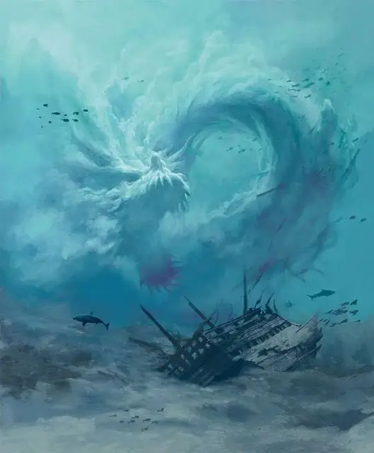

Левиафан
Leviathan
Громадный Элементаль, обычно нейтральный

Класс Доспеха 17
Хиты 328 (16к20 + 160)
Скорость 40 футов, плавая 120 футов
| мод | спас | ||
|---|---|---|---|
| СИЛ | 27 | +8 | +8 |
| ЛОВ | 24 | +7 | +7 |
| ТЕЛ | 30 | +10 | +10 |
| мод | спас | ||
|---|---|---|---|
| ИНТ | 2 | −4 | −4 |
| МДР | 18 | +4 | +10 |
| ХАР | 17 | +3 | +9 |
Сопротивление урону дробящий, колющий, рубящий от немагических атак
Иммунитет к урону кислота, яд
Иммунитет к состояниям окаменение, опутанность, отравление, сбивание с ног, захват, паралич, ошеломление, истощение
Чувства тёмное зрение 60 футов, пассивное Восприятие 14
Опасность 20 (25000 опыта)
Бонус мастерства +6
Среда обитания Побережье, Под водой
Особенности
Легендарное сопротивление (3/день). Если Левиафан проваливает спасбросок, он может вместо этого сделать спасбросок успешным.
Частичная заморозка. Если Левиафан получает 50 урона холодом или более за один ход, Левиафан частично замораживается; до конца его следующего хода, его скорость уменьшается до 20 футов, и он совершает атаки с помехой.
Осадное чудовище. Левиафан наносит двойное повреждение объектам и строениям (включено в Волну прилива).
Водяное тело. Левиафан может войти в клетку враждебного существа и остановиться там. Он может проходить через пространства размером более одного дюйма не протискиваясь.
Действия
Мультиатака. Левиафан совершает одну атаку Размашистым ударом и одну атаку Хвостом.
Размашистый удар. . Рукопашная атака оружием: +14 к попаданию, досягаемость 20 футов, одна цель. Попадание: 21 (2к12 + 8) дробящего урона плюс 13 (2к12) урона кислотой.
Хвост. . Рукопашная атака оружием: +14 к попаданию, досягаемость 20 футов, одна цель. Попадание: 19 (2к10 + 8) дробящего урона плюс 10 (3к6) урона кислотой.
Приливная волна (перезарядка 6). Левиафан магическим образом создаёт волну, исходящей из видимой точки в пределах 120 футов. Волна достигает в длину и высоту до 250 футов, а ширину до 50 футов. Когда волна появляется, все остальные существа в зоне должны совершить спасбросок Силы Сл 24. При провале существа получают 45 (7к12) дробящего урона или половину этого урона при успехе. Вода растекается по земле во всех направлениях, туша незащищенное пламя в своей области и в пределах 250 футов от неё, после чего исчезает.
Легендарные действия
Левиафан может совершить 3 легендарных действия, выбирая из перечисленных действий. Можно делать только одно легендарное действие, и только в конце хода другого существа. Левиафан восстанавливает все легендарные действия в начале своего хода.
Удар (стоит 2 действия). Левиафан совершает одну атаку Размашистым ударом.
Перемещение. Левиафан перемещается на свою скорость.
Описание
Левиафан - это огромное существо, которое действует как сила природы, что тянет корабли ко дну океана и смывает прибрежные поселения. Когда его призывают, левиафан возникает из огромного количества воды, преобразуясь в огромное змееобразное существо.
Обычно встречающийся только на Стихийном Плане Воды, левиафан иногда проплывает через портал в другой мир, где тритоны, морские эльфы и другие водные обитатели пытаются его сдержать. Известно также, что нигилистические культы совершают сложные ритуалы для вызова левиафана в мир с целью использования этого существа для уничтожения прибрежных поселений. Эти культисты часто считают благословением утонуть в водах элементаля.